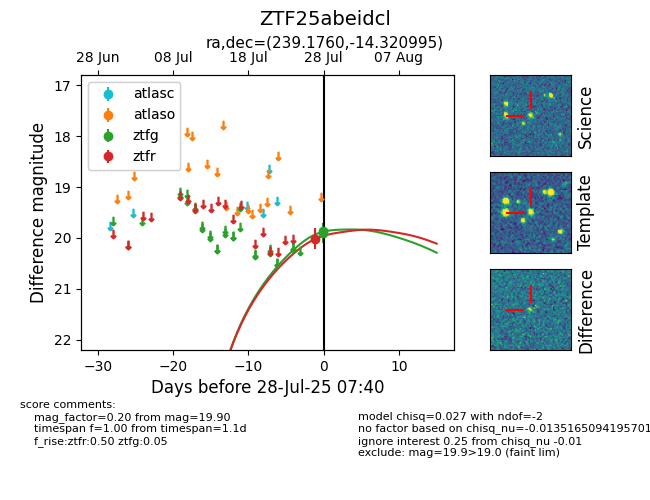

Target ZTF25abeidcl at 2025-07-28 07:40, see:
FINK: fink-portal.org/ZTF25abeidcl
Lasair: lasair-ztf.lsst.ac.uk/objects/ZTF25abeidcl
ALeRCE: alerce.online/object/ZTF25abeidcl
alt names
ZTF25abeidcl (ztf,fink)
coordinates:
equatorial (ra, dec) = (239.1760,-14.32100)
galactic (l, b) = (356.0740,+28.86847)
photometry
last ztfg=19.90, ztfr=20.02
2 ztfg, 1 ztfr detections
